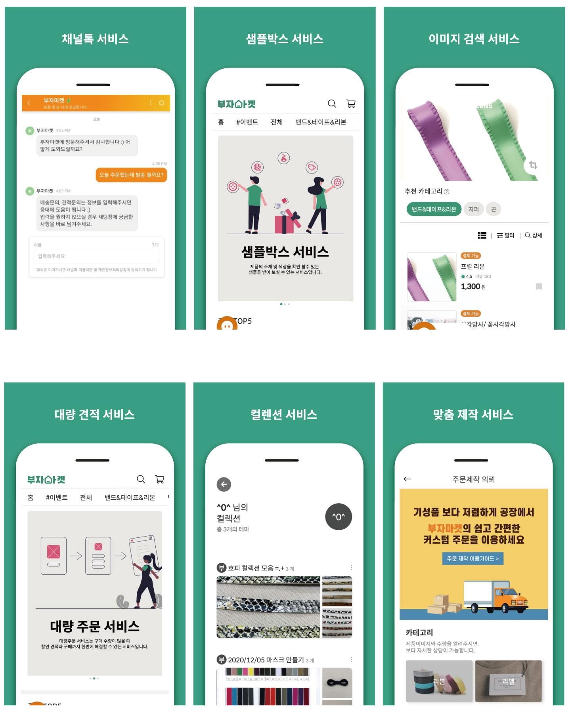

의류부자재 플랫폼(B2C/B2B)
- AI 검색 기반 의류부자재 거래 플랫폼 입니다.
Problem
부자재의 카테고리가 복잡하고 제조사 마다 다르게 분류
Solution
이미지의 특징을 기반으로 부자재를 분류

My Frontend Role
- 프로젝트 기획 및 설계
- 상품 템플릿 엔진 개발 및 적용
- AI 이미지 검색 UI/UX 디자인
- SEO 최적화
- 리뉴얼 및 유지보수